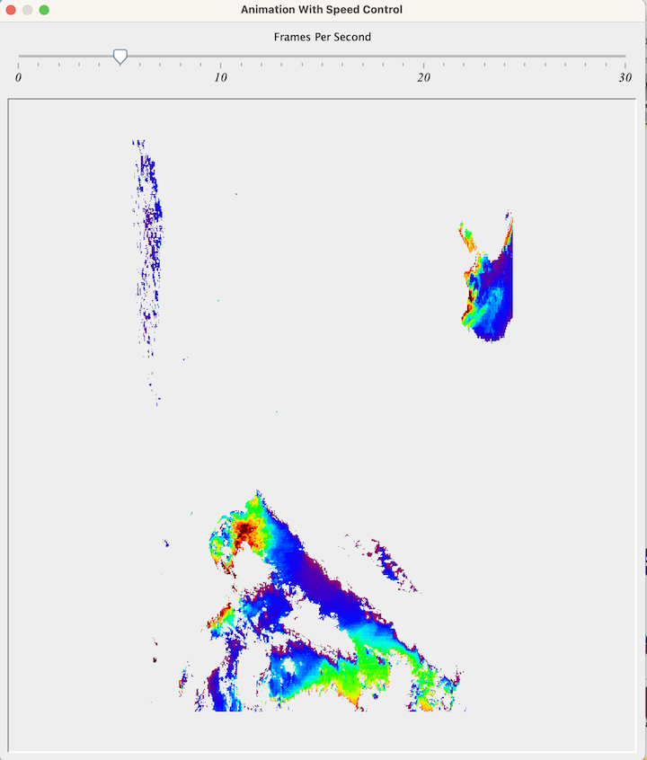
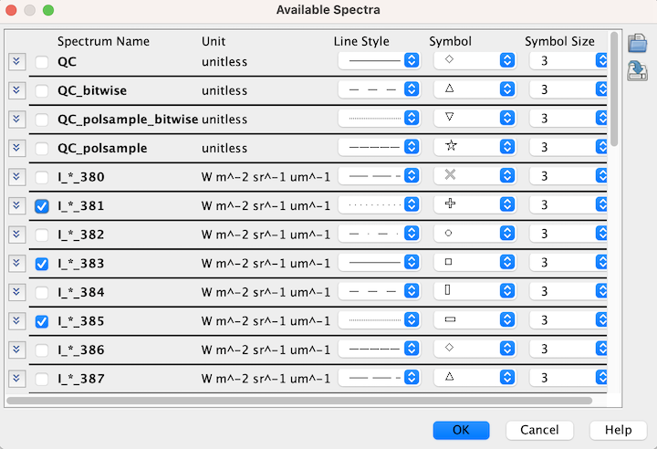

| Image Animator | |
Animate the image, angular view or spectrum view.

|
To bring up the "Image Animator" window click this tool button
in the "Layer" tool bar or select the
corresponding menu item in "SeaDAS-Toolobx -> General Tools -> Image Animator".
NOTE: this tool can only be accessed if the image of a band or product is displayed. |
The user interface of "Image Animator" tool is shown in the following image.



 , you open the "Angular Band Chooser" window
which allows you to define which angular bands to animate. You can also use the "Angular Band Chooser"
to change the symbol and line style of an angular band.
, you open the "Angular Band Chooser" window
which allows you to define which angular bands to animate. You can also use the "Angular Band Chooser"
to change the symbol and line style of an angular band.

By clicking , you start the the animation in "Animation
With Speed Control" window. You can use the "Frame Per Second" slider to decide the speed of the animation.
Closing the "Animation With Speed Control" window will return to "Angular View Animation" window.
Closing the "Angular View Animation" window will return to "Animate Images" window with the radio button set at
"Band Images"
, you start the the animation in "Animation
With Speed Control" window. You can use the "Frame Per Second" slider to decide the speed of the animation.
Closing the "Animation With Speed Control" window will return to "Angular View Animation" window.
Closing the "Angular View Animation" window will return to "Animate Images" window with the radio button set at
"Band Images"

, you open the "Spectrum Chooser"
which allows you to define which spectral bands to animate. You can also use the "Spectrum Chooser"
to change the symbol and line style of a spectra.

, you start the the animation in "Animation
With Speed Control" window. You can use the "Frame Per Second" slider to decide the speed of the animation.
Closing the "Animation With Speed Control" window will return to "Spectrum View Animation" window.
Closing the "Angular View Animation" window will return to "Animate Images" window with the radio button set at
"Band Images"